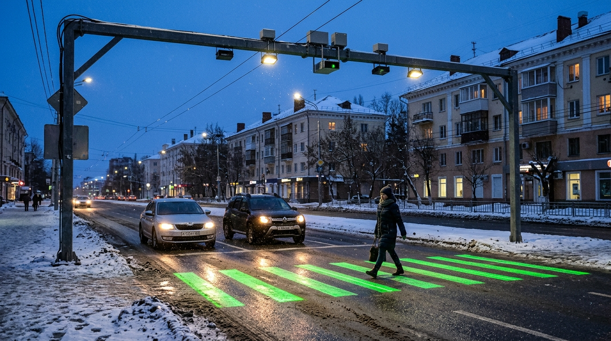

Умный пешеходный переход 2.0 (Интеллектуальная проекция)
На П-образных опорах устанавливаются микроволновые радары и камеры машинного зрения. При приближении человека за 10-15 м включается направленный световой коридор, поверх снега и луж проецируется яркая лазерная «зебра», а за 50-100 м загораются LED-табло для водителей.
Обнаружение пешеходаза 10-15 м
Предупреждение водителяза 50-100 м
Износ от шипов0% (свет)
Преимущества: четкий контур в любую погоду, работа на полную мощность только при наличии пешехода.
Риски и решение: загрязнение оптики в метель решается защитными козырьками и плановой очисткой.
Польза для водителя и ОСАГО
Заблаговременный световой сигнал за 50-100 м исключает случайный непропуск пешехода в сумерки и помогает сохранить годовую скидку на ОСАГО.